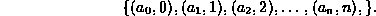
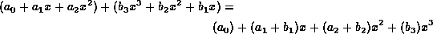

Data Structures and Algorithms
with Object-Oriented Design Patterns in Java
Data Structures and Algorithms
with Object-Oriented Design Patterns in Java
In Section  we saw that an
we saw that an  -order polynomial,
-order polynomial,

where  ,
can be represented by a sequence of ordered pairs thus:
,
can be represented by a sequence of ordered pairs thus:

We also saw that it is possible to make use of an ordered list to represent such a sequence and that given such a representation, we can write an algorithm to perform differentiation.
As it turns out, the order of the terms in the sequence does not affect the differentiation algorithm. The correct result is always obtained and the running time is unaffected regardless of the order of the terms in the sequence.
Unfortunately, there are operations on polynomials whose running time depends on the order of the terms. For example, consider the addition of two polynomials:

To perform the addition all the terms involving x raised to the same power need to be grouped together.
If the terms of the polynomials are in an arbitrary order, then the grouping together of the corresponding terms is time consuming. On the other hand, if the terms are ordered, say, from smallest exponent to largest, then the summation can be done rather more efficiently. A single pass through the polynomials will suffice. It makes sense to represent each of the polynomials as a sorted list of terms using, say, the SortedListAsLinkedList class.
 Copyright © 1998 by Bruno R. Preiss, P.Eng. All rights reserved.
Copyright © 1998 by Bruno R. Preiss, P.Eng. All rights reserved.